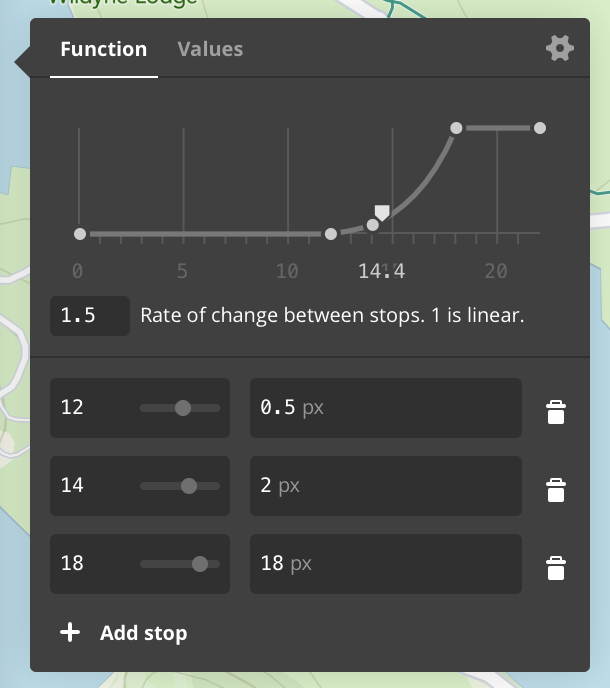
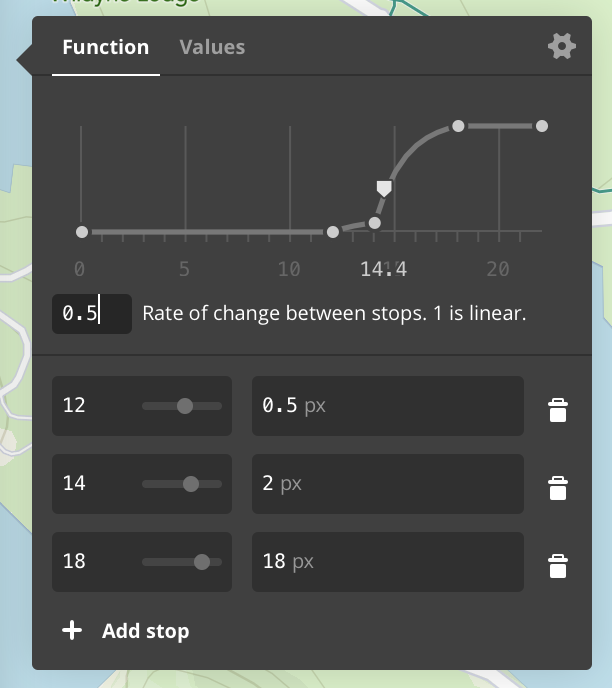
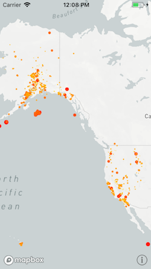
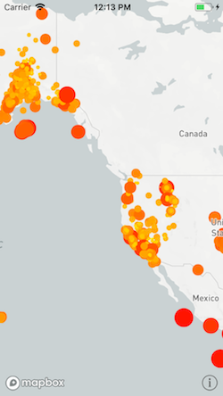
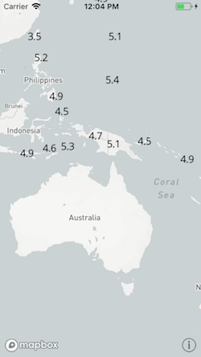
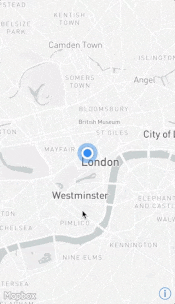
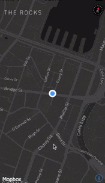

Appendices
Working with GeoJSON Data
This SDK offers several ways to work with GeoJSON files. GeoJSON is a standard file format for representing geographic data.
Adding a GeoJSON file to the map
You can use Mapbox Studio’s Datasets editor to upload a GeoJSON file and include it in your custom map style. The GeoJSON data will be hosted on Mapbox servers. When a user loads your style, the SDK automatically loads the GeoJSON data for display.
Alternatively, if you need to host the GeoJSON file elsewhere or bundle it with
your application, you can use a GeoJSON file as the basis of an
MGLShapeSource
object. Pass the file’s URL into the
-[MGLShapeSource initWithIdentifier:URL:options:]
initializer and add the
shape source to the map using the
-[MGLStyle addSource:]
method. The URL may
be a local file URL, an HTTP URL, or an HTTPS URL.
Once you’ve added the GeoJSON file to the map via an
MGLShapeSource object,
you can configure the appearance of its data and control what data is visible
using MGLStyleLayer objects. You can also
access the data programmatically.
Converting GeoJSON data into shape objects
If you have GeoJSON data in the form of source code (also known as “GeoJSON
text”), you can convert it into an MGLShape,
MGLFeature, or
MGLShapeCollectionFeature
object that the MGLShapeSource class
understands
natively. First, create an NSData object out of the source code string or file
contents, then pass that data object into the
+[MGLShape shapeWithData:encoding:error:]
method. Finally, you can pass the
resulting shape or feature object into the
-[MGLShapeSource initWithIdentifier:shape:options:]
initializer and add it to
the map, or you can use the object and its properties to power non-map-related
functionality in your application.
To include multiple shapes in the source, create and pass an
MGLShapeCollection or
MGLShapeCollectionFeature
object to
-[MGLShapeSource initWithIdentifier:shape:options:].
Alternatively, use the
-[MGLShapeSource initWithIdentifier:features:options:]
or
-[MGLShapeSource initWithIdentifier:shapes:options:]
method to create a shape source
with an array.
-[MGLShapeSource initWithIdentifier:features:options:]
accepts only MGLFeature
instances, such as
MGLPointFeature
objects, whose attributes you can use when
applying a predicate to
MGLVectorStyleLayer or configuring a
style layer’s
appearance.
Extracting GeoJSON data from the map
Any MGLShape,
MGLFeature, or
MGLShapeCollectionFeature
object has an
-[MGLShape geoJSONDataUsingEncoding:]
method that you can use to create a
GeoJSON source code representation of the object. You can extract a feature
object from the map using a method such as
-[MGLMapView visibleFeaturesAtPoint:].
About GeoJSON deserialization
The process of converting GeoJSON text into
MGLShape,
MGLFeature, or
MGLShapeCollectionFeature
objects is known as “GeoJSON deserialization”.
GeoJSON geometries, features, and feature collections are known in this SDK as
shapes, features, and shape collection features, respectively.
Each GeoJSON object type corresponds to a type provided by either this SDK or the Core Location framework:
| GeoJSON object type | SDK type |
|---|---|
Position (longitude, latitude) |
CLLocationCoordinate2D (latitude, longitude) |
Point |
MGLPointAnnotation |
MultiPoint |
MGLPointCollection |
LineString |
MGLPolyline |
MultiLineString |
MGLMultiPolyline |
Polygon |
MGLPolygon |
| Linear ring | MGLPolygon.coordinates,
MGLPolygon.interiorPolygons
|
MultiPolygon |
MGLMultiPolygon |
GeometryCollection |
MGLShapeCollection |
Feature |
MGLFeature |
FeatureCollection |
MGLShapeCollectionFeature
|
A Feature object in GeoJSON corresponds to an instance of an
MGLShape
subclass conforming to the MGLFeature protocol.
There is a distinct
MGLFeature-conforming class for each type of
geometry that a GeoJSON feature
can contain. This allows features to be used as raw shapes where convenient. For
example, some features can be added to a map view as annotations. Note that
identifiers and attributes will not be available for feature querying when a
feature is used as an annotation.
In contrast to the GeoJSON standard, it is possible for
MGLShape subclasses
other than MGLPointAnnotation to straddle
the antimeridian.
The following GeoJSON data types correspond straightforwardly to Foundation data types when they occur as feature identifiers or property values:
| GeoJSON data type | Objective-C representation | Swift representation |
|---|---|---|
null |
NSNull |
NSNull |
true, false |
NSNumber.boolValue |
Bool |
| Integer | NSNumber.unsignedLongLongValue, NSNumber.longLongValue |
UInt64, Int64 |
| Floating-point number | NSNumber.doubleValue |
Double |
| String | NSString |
String |
Predicates and expressions
Style layers use predicates and expressions to determine what to display and how
to format it. Predicates are represented by the same NSPredicate class that
filters results from Core Data or items in an NSArray in Objective-C.
Predicates are based on expressions, represented by the NSExpression class.
Somewhat unusually, style layers also use expressions on their own.
This document discusses the specific subset of the predicate and expression
syntax supported by this SDK. For a more general introduction to predicates and
expressions, consult the
Predicate
Programming Guide
in Apple developer documentation. For additional detail on how this SDK has
extended the NSExpression class, consult the NSExpression(MGLAdditions)
section of this documentation.
Using predicates to filter vector data
Most style layer classes display MGLFeature
objects that you can
show or hide
based on the feature’s attributes. Use the
MGLVectorStyleLayer.predicate
property to include only the features in the source layer that satisfy a
condition that you define.
Operators
The following comparison operators are supported:
NSPredicateOperatorType |
Format string syntax |
|---|---|
NSEqualToPredicateOperatorType |
key = valuekey == value |
NSGreaterThanOrEqualToPredicateOperatorType |
key >= valuekey => value |
NSLessThanOrEqualToPredicateOperatorType |
key <= valuekey =< value |
NSGreaterThanPredicateOperatorType |
key > value |
NSLessThanPredicateOperatorType |
key < value |
NSNotEqualToPredicateOperatorType |
key != valuekey <> value |
NSBetweenPredicateOperatorType |
key BETWEEN { 32, 212 } |
To test whether a feature has or lacks a specific attribute, compare the
attribute to NULL or NIL. Predicates created using the
+[NSPredicate predicateWithValue:] method are also supported. String
operators and custom operators are not supported.
The following compound operators are supported:
NSCompoundPredicateType |
Format string syntax |
|---|---|
NSAndPredicateType |
predicate1 AND predicate2predicate1 && predicate2 |
NSOrPredicateType |
predicate1 OR predicate2predicate1 || predicate2 |
NSNotPredicateType |
NOT predicate!predicate |
The following aggregate operators are supported:
NSPredicateOperatorType |
Format string syntax |
|---|---|
NSInPredicateOperatorType |
key IN { 'iOS', 'macOS', 'tvOS', 'watchOS' } |
NSContainsPredicateOperatorType |
{ 'iOS', 'macOS', 'tvOS', 'watchOS' } CONTAINS key |
You can use the IN and CONTAINS operators to test whether a value appears
in a collection,
whether a string is a substring of a larger string, or whether the evaluated feature
(SELF) lies within a
given MGLShape or
MGLFeature. For example, to show one delicious
local chain of
sandwich shops, but not similarly named steakhouses and pizzerias:
MGLPolygon *cincinnati = [MGLPolygon polygonWithCoordinates:cincinnatiCoordinates count:sizeof(cincinnatiCoordinates) / sizeof(cincinnatiCoordinates[0])];
deliLayer.predicate = [NSPredicate predicateWithFormat:@"class = 'food_and_drink' AND name CONTAINS 'Izzy' AND SELF IN %@", cincinnati];
let cincinnati = MGLPolygon(coordinates: &cincinnatiCoordinates, count: UInt(cincinnatiCoordinates.count))
deliLayer.predicate = NSPredicate(format: "class = 'food_and_drink' AND name CONTAINS 'Izzy' AND SELF IN %@", cincinnati)
The following combinations of comparison operators and modifiers are supported:
NSComparisonPredicateModifier |
NSPredicateOperatorType |
Format string syntax |
|---|---|---|
NSAllPredicateModifier |
NSNotEqualToPredicateOperatorType |
ALL haystack != needle |
NSAnyPredicateModifier |
NSEqualToPredicateOperatorType |
ANY haystack = needleSOME haystack = needle |
The following comparison predicate options are supported for comparison and aggregate operators that are used in the predicate:
NSComparisonPredicateOptions |
Format string syntax |
|---|---|
NSCaseInsensitivePredicateOption |
'QUEBEC' =[c] 'Quebec' |
NSDiacriticInsensitivePredicateOption |
'Québec' =[d] 'Quebec' |
Other comparison predicate options are unsupported, namely l
(for locale sensitivity) and n (for normalization). A comparison is
locale-sensitive as long as it is case- or diacritic-insensitive. Comparison
predicate options are not supported in conjunction with comparison modifiers
like ALL and ANY.
Operands
Operands in predicates can be variables, key paths, or almost anything else that can appear inside an expression.
Automatic type casting is not performed. Therefore, a feature only matches a
predicate if its value for the attribute in question is of the same type as the
value specified in the predicate. Use the CAST() operator to convert a key
path or variable into a matching type:
- To cast a value to a number, use
CAST(key, 'NSNumber'). - To cast a value to a string, use
CAST(key, 'NSString'). - To cast a value to a color, use
CAST(key, 'UIColor')on iOS andCAST(key, 'NSColor')on macOS. - To cast an
NSColororUIColorobject to an array, useCAST(noindex(color), 'NSArray').
For details about the predicate format string syntax, consult the “Predicate Format String Syntax” chapter of the Predicate Programming Guide in Apple developer documentation.
Using expressions to configure layout and paint attributes
An expression can contain subexpressions of various types. Each of the supported types of expressions is discussed below.
Constant values
A constant value can be of any of the following types:
| In Objective-C | In Swift |
|---|---|
NSColor (macOS)UIColor (iOS) |
NSColor (macOS)UIColor (iOS) |
NSString |
String |
NSString |
String |
NSNumber.boolValue |
NSNumber.boolValue |
NSNumber.doubleValue |
NSNumber.doubleValue |
NSArray<NSNumber> |
[Float] |
NSArray<NSString> |
[String] |
NSValue.CGVectorValue (iOS)NSValue containing
CGVector (macOS)
|
NSValue.cgVectorValue (iOS)NSValue containing
CGVector (macOS)
|
NSValue.UIEdgeInsetsValue (iOS)NSValue.edgeInsetsValue (macOS)
|
NSValue.uiEdgeInsetsValue (iOS)NSValue.edgeInsetsValue (macOS)
|
For literal floating-point values, use -[NSNumber numberWithDouble:] instead
of -[NSNumber numberWithFloat:] to avoid precision issues.
Key paths
A key path expression refers to an attribute of the
MGLFeature
object being
evaluated for display. For example, if a polygon’s
MGLFeature.attributes
dictionary contains the floorCount key, then the key path floorCount
refers
to the value of the floorCount attribute when evaluating that particular
polygon.
The following special attributes are also available on features that are produced as a result of clustering multiple point features together in a shape source:
| Attribute | Type | Meaning |
|---|---|---|
cluster |
Bool | True if the feature is a point cluster. If the attribute is false (or not present) then the feature should not be considered a cluster. |
cluster_id |
Number | Identifier for the point cluster. |
point_count |
Number | The number of point features in a given cluster. |
Some characters may not be used directly as part of a key path in a format
string. For example, if a feature’s attribute is named ISO 3166-1:2006, an
expression format string of lowercase(ISO 3166-1:2006) or a predicate format
string of ISO 3166-1:2006 == 'US-OH' would raise an exception. Instead, use a
%K placeholder or the +[NSExpression expressionForKeyPath:] initializer:
[NSPredicate predicateWithFormat:@"%K == 'US-OH'", @"ISO 3166-1:2006"];
[NSExpression expressionForFunction:@"lowercase:"
arguments:@[[NSExpression expressionForKeyPath:@"ISO 3166-1:2006"]]]
NSPredicate(format: "%K == 'US-OH'", "ISO 3166-1:2006")
NSExpression(forFunction: "lowercase:",
arguments: [NSExpression(forKeyPath: "ISO 3166-1:2006")])
Functions
Of the
functions
predefined
by the
+[NSExpression expressionForFunction:arguments:]
method,
the following subset is supported in layer attribute values:
| Initializer parameter | Format string syntax |
|---|---|
average: |
average({1, 2, 2, 3, 4, 7, 9}) |
sum: |
sum({1, 2, 2, 3, 4, 7, 9}) |
count: |
count({1, 2, 2, 3, 4, 7, 9}) |
min: |
min({1, 2, 2, 3, 4, 7, 9}) |
max: |
max({1, 2, 2, 3, 4, 7, 9}) |
add:to: |
1 + 2 |
from:subtract: |
2 - 1 |
multiply:by: |
1 * 2 |
divide:by: |
1 / 2 |
modulus:by: |
modulus:by:(1, 2) |
sqrt: |
sqrt(2) |
log: |
log(10) |
ln: |
ln(2) |
raise:toPower: |
2 ** 2 |
exp: |
exp(0) |
ceiling: |
ceiling(0.99999) |
abs: |
abs(-1) |
trunc: |
trunc(6378.1370) |
floor: |
floor(-0.99999) |
uppercase: |
uppercase('Elysian Fields') |
lowercase: |
lowercase('DOWNTOWN') |
noindex: |
noindex(0 + 2 + c) |
length: |
length('Wapakoneta') |
castObject:toType: |
CAST(ele, 'NSString')CAST(ele, 'NSNumber') |
A number of Mapbox-specific functions are also available.
The following predefined functions are not supported:
| Initializer parameter | Format string syntax |
|---|---|
median: |
median({1, 2, 2, 3, 4, 7, 9}) |
mode: |
mode({1, 2, 2, 3, 4, 7, 9}) |
stddev: |
stddev({1, 2, 2, 3, 4, 7, 9}) |
random |
random() |
randomn: |
randomn(10) |
now |
now() |
bitwiseAnd:with: |
bitwiseAnd:with:(5, 3) |
bitwiseOr:with: |
bitwiseOr:with:(5, 3) |
bitwiseXor:with: |
bitwiseXor:with:(5, 3) |
leftshift:by: |
leftshift:by:(23, 1) |
rightshift:by: |
rightshift:by:(23, 1) |
onesComplement: |
onesComplement(255) |
distanceToLocation:fromLocation: |
distanceToLocation:fromLocation:(there, here) |
Conditionals
Conditionals are supported via the built-in
+[NSExpression expressionForConditional:trueExpression:falseExpression:]
method and TERNARY() operator. If you need to express multiple cases
(“else-if”), you can either nest a conditional within a conditional or use the
MGL_IF() or MGL_MATCH()
function.
Aggregates
Aggregate expressions can contain arrays of expressions. In some cases, it is possible to use the array itself instead of wrapping the array in an aggregate expression.
Variables
The following variables are defined by this SDK for use with style layers:
| Variable | Type | Meaning |
|---|---|---|
$featureIdentifier |
Any GeoJSON data type |
A value that uniquely identifies the feature in the containing source.
This variable corresponds to the
NSExpression.featureIdentifierVariableExpression property.
|
$geometryType |
String |
The type of geometry represented by the feature. A feature’s type is one
of the following strings:
NSExpression.geometryTypeVariableExpression property.
|
$heatmapDensity |
Number |
The
kernel density
estimation
of a screen point in a heatmap layer; in other words, a relative measure
of how many data points are crowded around a particular pixel. This
variable can only be used with the heatmapColor property.
This variable corresponds to the
NSExpression.heatmapDensityVariableExpression property.
|
$zoomLevel |
Number |
The current zoom level. In style layout and paint properties, this
variable may only appear as the target of a top-level interpolation or
step expression. This variable corresponds to the
NSExpression.zoomLevelVariableExpression property.
|
$lineProgress |
Number |
A number that indicates the relative distance along a line at a given
point along the line. This variable evaluates to 0 at the beginning of the
line and 1 at the end of the line. It can only be used with the
`MGLLineStyleLayer.lineGradient` property. It corresponds to the
NSExpression.lineProgressVariableExpression property.
|
In addition to these variables, you can define your own variables and refer to
them elsewhere in the expression. The syntax for defining a variable makes use
of a Mapbox-specific function that takes an
NSDictionary as an argument:
[NSExpression expressionWithFormat:@"MGL_LET('floorCount', 2, $floorCount + 1)"];
NSExpression(format: "MGL_LET(floorCount, 2, $floorCount + 1)")
Mapbox-specific functions
For compatibility with the Mapbox Style Specification, the following functions
are defined by this SDK. When setting a style layer property, you can call these
functions just like the predefined functions above, using either the
+[NSExpression expressionForFunction:arguments:] method or a convenient format
string syntax:
mgl_does:have:
- Selector:
mgl_does:have:- Format string syntax:
mgl_does:have:(SELF, '🧀🍔')ormgl_does:have:(%@, '🧀🍔')
Returns a Boolean value indicating whether the dictionary has a value for the
key or whether the evaluated object (SELF) has a value for the feature
attribute. Compared to the mgl_has: custom function,
that function’s target is instead passed in as the first argument to this
function. Both functions are equivalent to the syntax key != NIL or
%@[key] != NIL but can be used outside of a predicate.
mgl_interpolate:withCurveType:parameters:stops:
- Selector:
mgl_interpolate:withCurveType:parameters:stops:- Format string syntax:
mgl_interpolate:withCurveType:parameters:stops:(x, 'linear', nil, %@)
Produces continuous, smooth results by interpolating between pairs of input and
output values (“stops”). Compared to the
mgl_interpolateWithCurveType:parameters:stops:
custom function, the input expression (that function’s target) is instead passed
in as the first argument to this function.
mgl_step:from:stops:
- Selector:
mgl_step:from:stops:- Format string syntax:
mgl_step:from:stops:(x, 11, %@)
Produces discrete, stepped results by evaluating a piecewise-constant function
defined by pairs of input and output values (“stops”). Compared to the
mgl_stepWithMinimum:stops: custom
function, the input expression (that function’s target) is instead passed in as
the first argument to this function.
mgl_join:
- Selector:
mgl_join:- Format string syntax:
mgl_join({'Old', 'MacDonald'})
Returns the result of concatenating together all the elements of an array in
order. Compared to the
stringByAppendingString: custom
function, this function takes only one argument, which is an aggregate
expression containing the strings to concatenate.
mgl_acos:
- Selector:
mgl_acos:- Format string syntax:
mgl_acos(1)
Returns the arccosine of the number.
This function corresponds to the
acos
operator in the Mapbox Style Specification.
mgl_asin:
- Selector:
mgl_asin:- Format string syntax:
mgl_asin(0)
Returns the arcsine of the number.
This function corresponds to the
asin
operator in the Mapbox Style Specification.
mgl_atan:
- Selector:
mgl_atan:- Format string syntax:
mgl_atan(20)
Returns the arctangent of the number.
This function corresponds to the
atan
operator in the Mapbox Style Specification.
mgl_cos:
- Selector:
mgl_cos:- Format string syntax:
mgl_cos(0)
Returns the cosine of the number.
This function corresponds to the
cos
operator in the Mapbox Style Specification.
mgl_log2:
- Selector:
mgl_log2:- Format string syntax:
mgl_log2(1024)
Returns the base-2 logarithm of the number.
This function corresponds to the
log2
operator in the Mapbox Style Specification.
mgl_round:
- Selector:
mgl_round:- Format string syntax:
mgl_round(1.5)
Returns the number rounded to the nearest integer. If the number is halfway between two integers, this function rounds it away from zero.
This function corresponds to the
round
operator in the Mapbox Style Specification.
mgl_sin:
- Selector:
mgl_sin:- Format string syntax:
mgl_sin(0)
Returns the sine of the number.
This function corresponds to the
sin
operator in the Mapbox Style Specification.
mgl_tan:
- Selector:
mgl_tan:- Format string syntax:
mgl_tan(0)
Returns the tangent of the number.
This function corresponds to the
tan
operator in the Mapbox Style Specification.
mgl_distanceFrom:
- Selector:
mgl_distanceFrom:- Format string syntax:
mgl_distanceFrom(%@)with anMGLShape
Returns the straight-line distance from the evaluated object to the given shape.
This function corresponds to the
distance
operator in the Mapbox Style Specification.
mgl_coalesce:
- Selector:
mgl_coalesce:- Format string syntax:
mgl_coalesce({x, y, z})
Returns the first non-nil value from an array of expressions.
This function corresponds to the
coalesce
operator in the Mapbox Style Specification.
mgl_attributed:
- Selector:
mgl_attributed:- Format string syntax:
mgl_attributed({x, y, z})
Concatenates and returns the array of
MGLAttributedExpression objects, for
use
with the
MGLSymbolStyleLayer.text
property.
MGLAttributedExpression.attributes
valid attributes.
| Key | Value Type |
|---|---|
MGLFontNamesAttribute
|
An NSExpression evaluating to an NSString array. |
MGLFontScaleAttribute
|
An NSExpression evaluating to an NSNumber value. |
MGLFontColorAttribute
|
An NSExpression evaluating to an UIColor (iOS) or
NSColor (macOS).
|
This function corresponds to the
format
operator in the Mapbox Style Specification.
MGL_LET
- Selector:
MGL_LET:- Format string syntax:
-
MGL_LET('age', uppercase('old'), 'name', uppercase('MacDonald'), mgl_join({$age, $name})) - Arguments:
-
Any number of variable names interspersed with their assigned
NSExpressionvalues, followed by anNSExpressionthat may contain references to those variables.
Returns the result of evaluating an expression with the given variable values.
Compared to the
mgl_expressionWithContext: custom
function, this function takes the variable names and values inline before the
expression that contains references to those variables.
MGL_MATCH
- Selector:
MGL_MATCH:- Format string syntax:
MGL_MATCH(x, 0, 'zero match', 1, 'one match', 2, 'two match', 'default')- Arguments:
- An input expression, then any number of argument pairs, followed by a default expression. Each argument pair consists of a constant value followed by an expression to produce as a result of matching that constant value. If the input value is an aggregate expression, then any of the constant values within that aggregate expression result in the following argument. This is shorthand for specifying an argument pair for each of the constant values within that aggregate expression. It is not possible to match the aggregate expression itself.
Returns the result of matching the input expression against the given constant values.
This function corresponds to the
+[NSExpression(MGLAdditions) mgl_expressionForMatchingExpression:inDictionary:defaultExpression:]
method and the
match
operator in the Mapbox Style Specification.
MGL_IF
- Selector:
MGL_IF:- Format string syntax:
MGL_IF(1 = 2, YES, 2 = 2, YES, NO)- Arguments:
-
Alternating
NSPredicateconditionals and resulting expressions, followed by a default expression.
Returns the first expression that meets the condition; otherwise, the default
value. Unlike
+[NSExpression expressionForConditional:trueExpression:falseExpression:] or
the TERNARY() syntax, this function can accept multiple “if else” conditions
and is supported on iOS 8.x and macOS 10.10.x; however, each conditional
passed into this function must be wrapped in a constant expression.
This function corresponds to the
+[NSExpression(MGLAdditions) mgl_expressionForConditional:trueExpression:falseExpresssion:]
method and the
case
operator in the Mapbox Style Specification.
MGL_FUNCTION
- Selector:
MGL_FUNCTION:- Format string syntax:
MGL_FUNCTION('typeof', mystery)- Arguments:
- Any arguments required by the expression operator.
An expression exactly as defined by the Mapbox Style Specification.
Custom functions
The following custom functions are also available with the
+[NSExpression expressionForFunction:selectorName:arguments:] method or the
FUNCTION() format string syntax.
Some of these functions are defined as methods on their respective target classes, but you should not call them directly outside the context of an expression, because the result may differ from the evaluated expression’s result or may result in undefined behavior.
The Mapbox Style Specification defines some operators for which no custom
function is available. To use these operators in an NSExpression, call the
MGL_FUNCTION() function with the same arguments
that the operator expects.
boolValue
- Selector:
boolValue- Format string syntax:
FUNCTION(1, 'boolValue')- Target:
-
An
NSExpressionthat evaluates to a number or string. - Arguments:
- None.
A Boolean representation of the target: FALSE when then input is an
empty string, 0, FALSE, NIL, or NaN,
otherwise TRUE.
mgl_has:
- Selector:
mgl_has:- Format string syntax:
FUNCTION($featureAttributes, 'mgl_has:', '🧀🍔')- Target:
-
An
NSExpressionthat evaluates to anNSDictionaryor the evaluated object (SELF). - Arguments:
-
An
NSExpressionthat evaluates to anNSStringrepresenting the key to look up in the dictionary or the feature attribute to look up in the evaluated object (seeMGLFeature.attributes).
true if the dictionary has a value for the key or if the evaluated
object has a value for the feature attribute.
This function corresponds to the
has
operator in the Mapbox Style Specification. See also the
mgl_does:have: function, which is used on its
own
without the FUNCTION() operator. You can also check whether an object has an
attribute by comparing the key path to NIL, for example
cheeseburger != NIL
or burger.cheese != NIL
mgl_expressionWithContext:
- Selector:
mgl_expressionWithContext:- Format string syntax:
-
FUNCTION($ios + $macos, 'mgl_expressionWithContext:', %@)with a dictionary containingiosandmacoskeys - Target:
-
An
NSExpressionthat may contain references to the variables defined in the context dictionary. - Arguments:
-
An
NSDictionarywithNSStrings as keys andNSExpressions as values. Each key is a variable name and each value is the variable’s value within the target expression.
The target expression with variable subexpressions replaced with the values defined in the context dictionary.
This function corresponds to the
let
operator in the Mapbox Style Specification. See also the
MGL_LET function, which is used on its own without the
FUNCTION() operator.
mgl_interpolateWithCurveType:parameters:stops:
- Selector:
mgl_interpolateWithCurveType:parameters:stops:- Format string syntax:
-
FUNCTION($zoomLevel, 'mgl_interpolateWithCurveType:parameters:stops:', 'linear', NIL, %@)with a dictionary containing zoom levels or other constant values as keys - Target:
-
An
NSExpressionthat evaluates to a number and contains a variable or key path expression. - Arguments:
-
The first argument is one of the following strings denoting curve types:
linear,exponential, orcubic-bezier. The second argument is an expression providing parameters for the curve:- If the curve type is
linear, the argument isNIL. -
If the curve type is
exponential, the argument is an expression that evaluates to a number, specifying the base of the exponential interpolation. -
If the curve type is
cubic-bezier, the argument is an array or aggregate expression containing four expressions, each evaluating to a number. The four numbers are control points for the cubic Bézier curve.
NSDictionaryobject representing the interpolation’s stops, with numeric zoom levels as keys and expressions as values. - If the curve type is
A value interpolated along the continuous mathematical function defined by the arguments, with the target as the input to the function.
The input expression is matched against the keys in the stop dictionary. The
keys may be feature attribute values, zoom levels, or heatmap densities. The
values may be constant values or NSExpression objects. For example, you can
use a stop dictionary with the zoom levels 0, 10, and 20 as keys and the colors
yellow, orange, and red as the values.
This function corresponds to the
+[NSExpression(MGLAdditions) mgl_expressionForInterpolatingExpression:withCurveType:parameters:stops:]
method and the
interpolate
operator in the Mapbox Style Specification. See also the
mgl_interpolate:withCurveType:parameters:stops:
function, which is used on its own without the FUNCTION() operator.
mgl_numberWithFallbackValues:
- Selector:
-
mgl_numberWithFallbackValues:,doubleValue,floatValue, ordecimalValue - Format string syntax:
FUNCTION(ele, 'mgl_numberWithFallbackValues:', 0)- Target:
-
An
NSExpressionthat evaluates to a Boolean value, number, or string. - Arguments:
-
Zero or more
NSExpressions, each evaluating to a Boolean value or string.
A numeric representation of the target:
- If the target is
NILorFALSE, the result is 0. - If the target is true, the result is 1.
- If the target is a string, it is converted to a number as specified by the “ToNumber Applied to the String Type” algorithm of the ECMAScript Language Specification.
- If multiple values are provided, each one is evaluated in order until the first successful conversion is obtained.
This function corresponds to the
to-number
operator in the Mapbox Style Specification. You can also cast a value to a
number by passing the value and the string NSNumber into the CAST()
operator.
mgl_stepWithMinimum:stops:
- Selector:
mgl_stepWithMinimum:stops:- Format string syntax:
-
FUNCTION($zoomLevel, 'mgl_stepWithMinimum:stops:', 0, %@)with a dictionary with zoom levels or other constant values as keys - Target:
-
An
NSExpressionthat evaluates to a number and contains a variable or key path expression. - Arguments:
-
The first argument is an expression that evaluates to a number, specifying
the minimum value in case the target is less than any of the stops in the
second argument.
The second argument is an
NSDictionaryobject representing the interpolation’s stops, with numeric zoom levels as keys and expressions as values.
The output value of the stop whose key is just less than the evaluated target, or the minimum value if the target is less than the least of the stops’ keys.
The input expression is matched against the keys in the stop dictionary. The
keys may be feature attribute values, zoom levels, or heatmap densities. The
values may be constant values or NSExpression objects. For example, you can
use a stop dictionary with the zoom levels 0, 10, and 20 as keys and the colors
yellow, orange, and red as the values.
This function corresponds to the
+[NSExpression(MGLAdditions) mgl_expressionForSteppingExpression:fromExpression:stops:]
method and the
step
operator in the Mapbox Style Specification.
stringByAppendingString:
- Selector:
stringByAppendingString:- Format string syntax:
FUNCTION('Old', 'stringByAppendingString:', 'MacDonald')- Target:
- An
NSExpressionthat evaluates to a string. - Arguments:
- One or more
NSExpressions, each evaluating to a string.
The target string with each of the argument strings appended in order.
This function corresponds to the
-[NSExpression(MGLAdditions) mgl_expressionByAppendingExpression:]
method and is similar to the
concat
operator in the Mapbox Style Specification. See also the
mgl_join: function, which concatenates multiple
expressions and is used on its own without the FUNCTION() operator.
stringValue
- Selector:
stringValue- Format string syntax:
FUNCTION(ele, 'stringValue')- Target:
-
An
NSExpressionthat evaluates to a Boolean value, number, or string. - Arguments:
- None.
A string representation of the target:
- If the target is
NIL, the result is the empty string. - If the target is a Boolean value, the result is the string
trueorfalse. - If the target is a number, it is converted to a string as specified by the “NumberToString” algorithm of the ECMAScript Language Specification.
- If the target is a color, it is converted to a string of the form
rgba(r,g,b,a), where r, g, and b are numerals ranging from 0 to 255 and a ranges from 0 to 1. - Otherwise, the target is converted to a string in the format specified by the
JSON.stringify()function of the ECMAScript Language Specification.
This function corresponds to the
to-string
operator in the Mapbox Style Specification. You can also cast a value to a
string by passing the value and the string NSString into the CAST()
operator.
Migrating from Style Functions to Expressions
Runtime Styling enables you to modify every aspect of the map’s appearance dynamically as a user interacts with your application. Developers can specify in advance how a layout or paint attribute will vary as the zoom level changes or how the appearance of individual features vary based on metadata provided by a content source.
With Mapbox Maps SDK for iOS v4.0.0, style functions have been replaced with expressions. These provide even more tools for developers who want to style their maps dynamically. This guide outlines some tips for migrating from style functions to expressions, and offers an overview of some things that developers can do with expressions.
An expression is represented at runtime by the NSExpression class. Expressions can be
used to style paint and layout properties based on zoom level, data attributes, or a combination of
the two.
A constant expression can also be assigned to a style property. For example, the opacity of a fill style layer can be set to a constant value between 0 and 1.
The documentation for each individual style layer property notes which non-constant expressions are enabled for that property. Style functions supported four interpolation modes: exponential, interval, categorical, and identity.
This guide uses earthquake data from the U.S. Geological Survey. Under each interpolation mode, the style function implementation will be shown, followed by the current syntax.
For more information about how to work with GeoJSON data in our iOS SDK, please see our working with GeoJSON data guide. To learn more about supported expressions, see our “Predicates and Expressions” guide. The “Predicates and Expressions” guide also outlines Mapbox custom functions that can be used to dynamically style a map.
Stops
Stops are dictionary keys that are associated with layer attribute values. Constant values no longer need to be wrapped as style values when they are values in a stops dictionary.
Style function syntax:
let stops = [
0: MGLStyleValue<UIColor>(rawValue: .yellow),
2.5: MGLStyleValue(rawValue: .orange),
5: MGLStyleValue(rawValue: .red),
7.5: MGLStyleValue(rawValue: .blue),
10: MGLStyleValue(rawValue: .white),
]
Current syntax:
// Swift sample on how to populate a stepping expression with multiple stops.
// Create a color ramp.
let stops: [NSNumber: UIColor] = [
0: .yellow,
2.5: .orange,
5: .red,
7.5: .blue,
10: .white,
]
// Based on the zoom and `stops`, change the color.
var functionExpression = NSExpression(forMGLStepping: .zoomLevelVariable,
from: NSExpression(forConstantValue: stops[0]),
stops: NSExpression(forConstantValue: stops))
// Based on zoom and `stopsLineWidth`, set the Line width.
let initialValue = 4.0
let stopsLineWidth = [
11.0: initialValue,
14.0: 6.0,
20.0: 18.0]
functionExpression = NSExpression(
forMGLStepping: .zoomLevelVariable,
from: NSExpression(forConstantValue: initialValue),
stops: NSExpression(forConstantValue: stopsLineWidth)
)
Interpolation mode
Style functions supported four interpolation modes: exponential/linear, interval, categorical, and identity. For more information about supported custom expressions, please see the “Predicates and Expressions” guide.
Linear
+[NSExpression(MGLAdditions) mgl_expressionForInterpolatingExpression:withCurveType:parameters:stops:]
takes the interpolation type as a parameter. If you previously used the default interpolation base,
use the curve type MGLExpressionInterpolationMode.linear. See the mgl_interpolate:withCurveType:parameters:stops:
documentation for more details.
The stops dictionary below, shows colors that continuously shift from yellow to orange to red to blue to white based on the attribute value.
Style function syntax:
let url = URL(string: "https://earthquake.usgs.gov/earthquakes/feed/v1.0/summary/all_week.geojson")!
let symbolSource = MGLSource(identifier: "source")
let symbolLayer = MGLSymbolStyleLayer(identifier: "place-city-sm", source: symbolSource)
let source = MGLShapeSource(identifier: "earthquakes", url: url, options: nil)
mapView.style?.addSource(source)
let stops = [
0: MGLStyleValue<UIColor>(rawValue: .yellow),
2.5: MGLStyleValue(rawValue: .orange),
5: MGLStyleValue(rawValue: .red),
7.5: MGLStyleValue(rawValue: .blue),
10: MGLStyleValue(rawValue: .white),
]
let layer = MGLCircleStyleLayer(identifier: "circles", source: source)
layer.circleColor = MGLStyleValue(interpolationMode: .exponential,
sourceStops: stops,
attributeName: "mag",
options: [.defaultValue: MGLStyleValue<UIColor>(rawValue: .green)])
layer.circleRadius = MGLStyleValue(rawValue: 10)
mapView.style?.insertLayer(layer, below: symbolLayer)
Current syntax:
let url = URL(string: "https://earthquake.usgs.gov/earthquakes/feed/v1.0/summary/all_week.geojson")!
let symbolSource = MGLSource(identifier: "source")
let symbolLayer = MGLSymbolStyleLayer(identifier: "place-city-sm", source: symbolSource)
let source = MGLShapeSource(identifier: "earthquakes", url: url, options: nil)
let mag = 1.0 // Update based on earthquake GeoJSON data
mapView.style?.addSource(source)
let stops: [NSNumber: UIColor] = [
0: .yellow,
2.5: .orange,
5: .red,
7.5: .blue,
10: .white,
]
let layer = MGLCircleStyleLayer(identifier: "circles", source: source)
let circleExpression : NSExpression
if #available(iOS 15, *) {
circleExpression = NSExpression(
forMGLInterpolating: NSExpression(forConstantValue: mag),
curveType: .linear,
parameters: nil,
stops: NSExpression(forConstantValue: stops))
} else {
// This works up to iOS 14.5
circleExpression = NSExpression(
format: "mgl_interpolate:withCurveType:parameters:stops:(mag, 'linear', nil, %@)",
stops)
}
layer.circleColor = circleExpression
layer.circleRadius = NSExpression(forConstantValue: 10)
mapView.style?.insertLayer(layer, below: symbolLayer)
Exponential
If you previously used an interpolation base greater than 0 (other than
1), you can use MGLExpressionInterpolationMode.exponential as the curve
type for
+[NSExpression(MGLAdditions) mgl_expressionForInterpolatingExpression:withCurveType:parameters:stops:]
or 'exponential' as the curve type for mgl_interpolate:withCurveType:parameters:stops:.
The parameters argument takes that interpolation base. This interpolates between values
exponentially, creating an accelerated ramp effect.
Here’s a visualization from Mapbox Studio (see Mapbox Studio and iOS)
comparing interpolation base values of 1.5 and 0.5 based on zoom. In order
to convert camera style functions, use $zoomLevel or
MGL_FUNCTION('zoomLevel') as the attribute key.
 
The example below increases a layer’s circleRadius exponentially based on a map’s zoom
level. The interpolation base is 1.5.
Style function syntax:
let stops = [
12: MGLStyleValue<NSNumber>(rawValue: 0.5),
14: MGLStyleValue(rawValue: 2),
18: MGLStyleValue(rawValue: 18),
]
layer.circleRadius = MGLStyleValue(interpolationMode: .exponential,
cameraStops: stops,
options: [.interpolationBase: 1.5])
Current syntax:
let stops = [
12: 0.5,
14: 2,
18: 18,
]
layer.circleRadius = NSExpression(forMGLInterpolating: .zoomLevelVariable,
curveType: .exponential,
parameters: NSExpression(forConstantValue: 1.5),
stops: NSExpression(forConstantValue: stops))
Interval
Steps, or intervals, create a range using the keys from the stops dictionary. The range is from the
given key to just less than the next key. The attribute values that fall into that range are then
styled using the layout or paint value assigned to that key. You can use the
+[NSExpression(MGLAdditions) mgl_expressionForSteppingExpression:fromExpression:stops:]
method or the custom function mgl_step:from:stops:
for cases where you previously used interval interpolation mode. The first parameter takes the
feature attribute name and the second parameter (from:) optionally takes the default or
fallback value for that function. The final parameter takes a stops dictionary as an argument.
When we use the stops dictionary given above with an 'mgl_step:from:stops:', we create
ranges where earthquakes with a magnitude of 0 to just less than 2.5 would be yellow, 2.5 to just
less than 5 would be orange, and so on.
Style function syntax:
let stops = [
0: MGLStyleValue<UIColor>(rawValue: .yellow),
2.5: MGLStyleValue(rawValue: .orange),
5: MGLStyleValue(rawValue: .red),
7.5: MGLStyleValue(rawValue: .blue),
10: MGLStyleValue(rawValue: .white),
]
layer.circleColor = MGLStyleValue(interpolationMode: .interval,
sourceStops: stops,
attributeName: "mag",
options: [.defaultValue: MGLStyleValue<UIColor>(rawValue: .green)])
Current syntax:
let stops: [NSNumber: UIColor] = [
0: .yellow,
2.5: .orange,
5: .red,
7.5: .blue,
10: .white,
]
layer.circleColor = NSExpression(forMGLStepping: .zoomLevelVariable,
from: NSExpression(forConstantValue: UIColor.green),
stops: NSExpression(forConstantValue: stops))
Categorical
Categorical interpolation mode took a stops dictionary. If the value for a specified feature
attribute name matched one in that stops dictionary, the style value for that attribute value would
be used. Categorical style functions can now be replaced with MGL_MATCH.
MGL_MATCH takes an initial condition, which in this case is an attribute key. This is
followed by possible matches for that key and the value to assign to the layer property if there is
a match. The final argument can be a default style value that is to be used if none of the specified
values match.
There are three main types of events in the USGS dataset: earthquakes, explosions, and quarry blasts. In this case, the color of the circle layer will be determined by the type of event, with a default value of blue to catch any events that do not fall into any of those categories.
Style function syntax:
let categoricalStops = [
"earthquake": MGLStyleValue<UIColor>(rawValue: .orange),
"explosion": MGLStyleValue(rawValue: .red),
"quarry blast": MGLStyleValue(rawValue: .yellow),
]
layer.circleColor = MGLStyleValue(interpolationMode: .categorical,
sourceStops: categoricalStops,
attributeName: "type",
options: [.defaultValue: MGLStyleValue<UIColor>(rawValue: .blue)])
Current syntax:
// Category type
let type = NSExpression(forConstantValue: "type")
// Categories
let earthquake = NSExpression(forConstantValue: "earthquake")
let explosion = NSExpression(forConstantValue: "explosion")
let quarryBlast = NSExpression(forConstantValue: "quarry blast")
let defaultColor = NSExpression(forConstantValue: UIColor.blue)
let orange = NSExpression(forConstantValue: UIColor.orange)
let red = NSExpression(forConstantValue: UIColor.red)
let yellow = NSExpression(forConstantValue: UIColor.yellow)
XCTExpectFailure("#331")
layer.circleColor = NSExpression(forMGLMatchingKey: type,
in: [earthquake:orange, explosion:red, quarryBlast:yellow],
default: defaultColor)
If your use case does not require a default value, you can either apply a predicate to your layer
prior to styling it, or use the format string "valueForKeyPath:".
Identity
Identity interpolation mode used the attribute’s value as the style layer property value. In this
example, you might set the circleRadius to the earthquake’s magnitude. In order to use
a feature attribute value to style a layer property, set the property value to
[NSExpression expressionForKeyPath:], which take the feature attribute name as an
argument.
Style function syntax:
layer.circleRadius = MGLStyleValue(interpolationMode: .identity,
sourceStops: nil,
attributeName: "mag",
options: [.defaultValue: MGLStyleValue<NSNumber>(rawValue: 0)])
Current syntax:
layer.circleRadius = NSExpression(forKeyPath: "mag")

Some built-in functions can be applied to attribute values to style layer property values. To set
the circle radius to three times the earthquake’s magnitude, create a multiply:by:
function that takes the attribute value and the multiplier as arguments, or use a format string.
layer.circleRadius = NSExpression(forFunction: "multiply:by:", arguments: [NSExpression(forKeyPath: "mag"), 3])

You can also cast attribute values in order to use them. One example is to cast an integer as an
NSString and use it as a text value.
let magnitudeLayer = MGLSymbolStyleLayer(identifier: "mag-layer", source: source)
magnitudeLayer.text = NSExpression(format: "CAST(mag, 'NSString')")
mapView.style?.addLayer(magnitudeLayer)

Constant Values
For constant values that do not necessarily change based on camera or attribute values, use
[NSExpression expressionForConstantValue:] (previously
[MGLStyleValue valueWithRawValue:]).
Resources
Information for Style Authors
A style defines a map view’s content and appearance. If you’ve authored a style using Mapbox Studio’s Styles editor or as JSON in a text editor, you can use that style in this SDK and manipulate it afterwards in code. This document provides information you can use to ensure a seamless transition from Mapbox Studio to your application.
Designing for iOS
When designing your style, consider the context in which your application shows the style. There are a number of considerations specific to iOS that may not be obvious when designing your style in Mapbox Studio on the Web. A map view is essentially a graphical user interface element, so many of same issues in user interface design also apply when designing a map style.
Color
Ensure sufficient contrast in your application’s user interface when your map style is present. Standard user interface elements such as toolbars, sidebars, and sheets often overlap the map view with a translucent, blurred background, so make sure the contents of these elements remain legible with the map view underneath. The user location annotation view, the attribution button, any buttons in callout views, and any items in the navigation bar are influenced by your application’s tint color, so choose a tint color that contrasts well with your map style. If you intend your style to be used in the dark, consider the impact that Night Shift may have on your style’s colors.
Typography and graphics
Choose font and icon sizes appropriate to iOS devices. iPhones and iPads have smaller screens than the typical browser window in which you would use Mapbox Studio, especially when multitasking is enabled. Your user’s viewing distance may be shorter than on a desktop computer. Some of your users may use the Larger Dynamic Type and Accessibility Text features to increase the size of all text on the device. You can use the runtime styling API to adjust your style’s font and icon sizes accordingly.
Design sprite images and choose font weights that look crisp on both standard-resolution displays and Retina displays. This SDK supports the same resolutions as iOS. Standard-resolution displays are limited to older devices that your application may or may not support, depending on its minimum deployment target.
Icon and text labels should be legible regardless of the map’s orientation.
By default, this SDK makes it easy for your users to rotate or tilt the map
using multitouch gestures.
If you do not intend your design to accommodate rotation and tilting, disable
these gestures using the
MGLMapView.rotateEnabled
and
MGLMapView.pitchEnabled
properties, respectively, or the corresponding
inspectables in Interface Builder.
Interactivity
Pay attention to whether elements of your style appear to be interactive.
A text label may look like a tappable button merely due to matching your
application’s tint color or the default blue tint color.
You can make an icon or text label interactive by installing a gesture
recognizer and performing feature querying (e.g.,
-[MGLMapView visibleFeaturesAtPoint:])
to get details about the selected
feature.
Make sure your users can easily distinguish any interactive elements from the surrounding map, such as pins, the user location annotation view, or a route line. Avoid relying on hover effects to indicate interactive elements. Leave enough room between interactive elements to accommodate imprecise tapping gestures.
For more information about user interface design, consult Apple’s iOS Human Interface Guidelines. To learn more about designing maps for mobile devices, see Nathaniel Slaughter’s blog post on the subject.
Applying your style
You set an MGLMapView object’s style either in
code, by setting
the
MGLMapView.styleURL
property, or
in Interface Builder, by setting the “Style
URL” inspectable. The URL must point to a local or remote style JSON file. The
style JSON file format is defined by the
Mapbox Style Specification. This
SDK supports the functionality defined by version 8 of the specification unless
otherwise noted in the
style specification documentation.
Manipulating the style at runtime
The runtime styling API enables you to modify every aspect of a style
dynamically as a user interacts with your application. The style itself is
represented at runtime by an MGLStyle object, which
provides access
to various
MGLSource and
MGLStyleLayer objects that represent content
sources and style
layers, respectively.
For more information about the capabilities exposed by the runtime styling API,
see “Runtime Styling”.
The names of runtime styling classes and properties on iOS are generally consistent with the style specification and Mapbox Studio’s Styles editor. Any exceptions are listed in this document.
To avoid conflicts with Objective-C keywords or Cocoa terminology, this SDK uses the following terms for concepts defined in the style specification:
| In the style specification | In the SDK |
|---|---|
| bounds | coordinate bounds |
| filter | predicate |
| function type | interpolation mode |
| id | identifier |
| image | style image |
| layer | style layer |
| property | attribute |
| SDF icon | template image |
| source | content source |
Specifying the map’s content
Each source defined by a style JSON file is represented at runtime by a content
source object that you can use to initialize new style layers. The content
source object is a member of one of the following subclasses of
MGLSource:
| In style JSON | In the SDK |
|---|---|
vector |
MGLVectorTileSource |
raster |
MGLRasterTileSource |
raster-dem |
MGLRasterDEMSource
|
geojson |
MGLShapeSource |
image |
MGLImageSource |
canvas and video sources are not supported.
Tile sources
Raster and vector tile sources may be defined in TileJSON configuration files.
This SDK supports the properties defined in the style specification, which are a
subset of the keys defined in version 2.1.0 of the
TileJSON
specification. As an alternative to authoring a custom TileJSON file, you may
supply various tile source options when creating a raster or vector tile source.
These options are detailed in the
MGLTileSourceOption
documentation:
| In style JSON | In TileJSON | In the SDK |
|---|---|---|
url |
— | configurationURL parameter in
-[MGLTileSource initWithIdentifier:configurationURL:]
|
tiles |
tiles |
tileURLTemplates parameter in
-[MGLTileSource initWithIdentifier:tileURLTemplates:options:]
|
minzoom |
minzoom |
MGLTileSourceOptionMinimumZoomLevel
|
maxzoom |
maxzoom |
MGLTileSourceOptionMaximumZoomLevel
|
bounds |
bounds |
MGLTileSourceOptionCoordinateBounds
|
tileSize |
— |
MGLTileSourceOptionTileSize
|
attribution |
attribution |
MGLTileSourceOptionAttributionHTMLString
(but consider specifying
MGLTileSourceOptionAttributionInfos
instead for improved security)
|
scheme |
scheme |
MGLTileSourceOptionTileCoordinateSystem
|
encoding |
– |
MGLTileSourceOptionDEMEncoding
|
Shape sources
Shape sources also accept various options. These options are detailed in the
MGLShapeSourceOption
documentation:
| In style JSON | In the SDK |
|---|---|
data |
url parameter in
-[MGLShapeSource initWithIdentifier:URL:options:]
|
maxzoom |
MGLShapeSourceOptionMaximumZoomLevel
|
buffer |
MGLShapeSourceOptionBuffer
|
tolerance |
MGLShapeSourceOptionSimplificationTolerance
|
cluster |
MGLShapeSourceOptionClustered
|
clusterRadius |
MGLShapeSourceOptionClusterRadius
|
clusterMaxZoom |
MGLShapeSourceOptionMaximumZoomLevelForClustering
|
lineMetrics |
MGLShapeSourceOptionLineDistanceMetrics
|
To create a shape source from local GeoJSON data, first
convert the
GeoJSON data into a
shape,
then use the
-[MGLShapeSource initWithIdentifier:shape:options:]
method.
Image sources
Image sources accept a non-axis aligned quadrilateral as their geographic coordinates.
These coordinates, in MGLCoordinateQuad,
are described in
counterclockwise order,
in contrast to the clockwise order defined in the style specification.
Configuring the map content’s appearance
Each layer defined by the style JSON file is represented at runtime by a style
layer object, which you can use to refine the map’s appearance. The style layer
object is a member of one of the following subclasses of
MGLStyleLayer:
| In style JSON | In the SDK |
|---|---|
background |
MGLBackgroundStyleLayer |
circle |
MGLCircleStyleLayer |
fill |
MGLFillStyleLayer |
fill-extrusion |
MGLFillExtrusionStyleLayer
|
heatmap |
MGLHeatmapStyleLayer |
hillshade |
MGLHillshadeStyleLayer |
line |
MGLLineStyleLayer |
raster |
MGLRasterStyleLayer |
symbol |
MGLSymbolStyleLayer |
You configure layout and paint attributes by setting properties on these style layer objects. The property names generally correspond to the style JSON properties, except for the use of camelCase instead of kebab-case. Properties whose names differ from the style specification are listed below:
Circle style layers
| In style JSON | In Objective-C | In Swift |
|---|---|---|
circle-pitch-scale |
MGLCircleStyleLayer.circleScaleAlignment
|
MGLCircleStyleLayer.circleScaleAlignment
|
circle-translate |
MGLCircleStyleLayer.circleTranslation
|
MGLCircleStyleLayer.circleTranslation
|
circle-translate-anchor |
MGLCircleStyleLayer.circleTranslationAnchor
|
MGLCircleStyleLayer.circleTranslationAnchor
|
Fill style layers
| In style JSON | In Objective-C | In Swift |
|---|---|---|
fill-antialias |
MGLFillStyleLayer.fillAntialiased
|
MGLFillStyleLayer.isFillAntialiased |
fill-translate |
MGLFillStyleLayer.fillTranslation
|
MGLFillStyleLayer.fillTranslation
|
fill-translate-anchor |
MGLFillStyleLayer.fillTranslationAnchor
|
MGLFillStyleLayer.fillTranslationAnchor
|
Fill extrusion style layers
| In style JSON | In Objective-C | In Swift |
|---|---|---|
fill-extrusion-vertical-gradient |
MGLFillExtrusionStyleLayer.fillExtrusionHasVerticalGradient
|
MGLFillExtrusionStyleLayer.fillExtrusionHasVerticalGradient
|
fill-extrusion-translate |
MGLFillExtrusionStyleLayer.fillExtrusionTranslation
|
MGLFillExtrusionStyleLayer.fillExtrusionTranslation
|
fill-extrusion-translate-anchor |
MGLFillExtrusionStyleLayer.fillExtrusionTranslationAnchor
|
MGLFillExtrusionStyleLayer.fillExtrusionTranslationAnchor
|
Line style layers
| In style JSON | In Objective-C | In Swift |
|---|---|---|
line-dasharray |
MGLLineStyleLayer.lineDashPattern
|
MGLLineStyleLayer.lineDashPattern
|
line-translate |
MGLLineStyleLayer.lineTranslation
|
MGLLineStyleLayer.lineTranslation
|
line-translate-anchor |
MGLLineStyleLayer.lineTranslationAnchor
|
MGLLineStyleLayer.lineTranslationAnchor
|
Raster style layers
| In style JSON | In Objective-C | In Swift |
|---|---|---|
raster-brightness-max |
MGLRasterStyleLayer.maximumRasterBrightness
|
MGLRasterStyleLayer.maximumRasterBrightness
|
raster-brightness-min |
MGLRasterStyleLayer.minimumRasterBrightness
|
MGLRasterStyleLayer.minimumRasterBrightness
|
raster-hue-rotate |
MGLRasterStyleLayer.rasterHueRotation
|
MGLRasterStyleLayer.rasterHueRotation
|
raster-resampling |
MGLRasterStyleLayer.rasterResamplingMode
|
MGLRasterStyleLayer.rasterResamplingMode
|
Symbol style layers
Setting attribute values
Each property representing a layout or paint attribute is set to an
NSExpression object. NSExpression objects play the same role as
expressions in the Mapbox
Style
Specification,
but you create the former using a very different syntax. NSExpression’s format
string syntax is reminiscent of a spreadsheet formula or an expression in a
database query. See the
“Predicates and Expressions” guide for an
overview of the expression support in this SDK. This SDK no longer supports
style functions; use expressions instead.
Constant values in expressions
In contrast to the JSON type that the style specification defines for each layout or paint property, the style value object often contains a more specific Foundation or Cocoa type. General rules for attribute types are listed below. Pay close attention to the SDK documentation for the attribute you want to get or set.
| In style JSON | In Objective-C | In Swift |
|---|---|---|
| Color | UIColor |
UIColor |
| Enum | NSString |
String |
| String | NSString |
String |
| Boolean | NSNumber.boolValue |
NSNumber.boolValue |
| Number | NSNumber.floatValue |
NSNumber.floatValue |
Array (-dasharray) |
NSArray<NSNumber> |
[Float] |
Array (-font) |
NSArray<NSString> |
[String] |
Array (-offset, -translate) |
NSValue.CGVectorValue |
NSValue.cgVectorValue |
Array (-padding) |
NSValue.UIEdgeInsetsValue |
NSValue.uiEdgeInsetsValue |
For padding attributes, note that the arguments to
UIEdgeInsetsMake() in Objective-C and UIEdgeInsets(top:left:bottom:right:)
in Swift
are specified in counterclockwise order, in contrast to the clockwise order
defined by the style specification.
Expression operators
Many expression operators defined in the style specification have corresponding
symbols to be used with the +[NSExpression expressionWithFormat:],
+[NSExpression expressionForFunction:arguments:], or
+[NSExpression expressionForFunction:selectorName:arguments:] method:
| In style specification | Method, function, or predicate type | Format string syntax |
|---|---|---|
array |
||
boolean |
||
collator |
NSComparisonPredicateOptions |
'Québec' =[cd] 'QUEBEC' |
literal |
+[NSExpression expressionForConstantValue:] |
%@ representing NSArray or NSDictionary |
number |
||
string |
||
to-boolean |
boolValue |
|
to-color |
CAST(var, 'UIColor') |
|
to-number |
mgl_numberWithFallbackValues: |
CAST(zipCode, 'NSNumber') |
to-string |
stringValue |
CAST(ele, 'NSString') |
typeof |
||
geometry-type |
NSExpression.geometryTypeVariableExpression |
$geometryType |
id |
NSExpression.featureIdentifierVariableExpression |
$featureIdentifier |
properties |
NSExpression.featureAttributesVariableExpression |
$featureAttributes |
at |
objectFrom:withIndex: |
array[n] |
get |
+[NSExpression expressionForKeyPath:] |
Key path |
has |
mgl_does:have: |
mgl_does:have:(self, 'key') |
in |
NSInPredicateOperatorType |
needle IN haystack or haystack CONTAINS needle or
ANY haystack = needle
|
length |
count: |
count({1, 2, 2, 3, 4, 7, 9}) |
! |
NSNotPredicateType |
NOT (p0 OR … OR pn) |
!= |
NSNotEqualToPredicateOperatorType |
key != value |
< |
NSLessThanPredicateOperatorType |
key < value |
<= |
NSLessThanOrEqualToPredicateOperatorType |
key <= value |
== |
NSEqualToPredicateOperatorType |
key == value |
> |
NSGreaterThanPredicateOperatorType |
key > value |
>= |
NSGreaterThanOrEqualToPredicateOperatorType |
key >= value |
all |
NSAndPredicateType |
p0 AND … AND pn |
any |
NSOrPredicateType |
p0 OR … OR pn |
case |
+[NSExpression expressionForConditional:trueExpression:falseExpression:] or
MGL_IF
or +[NSExpression mgl_expressionForConditional:trueExpression:falseExpresssion:]
|
TERNARY(1 = 2, YES, NO) or MGL_IF(1 = 2, YES, 2 = 2, YES, NO) |
coalesce |
mgl_coalesce: |
mgl_coalesce({x, y, z}) |
match |
MGL_MATCH or
+[NSExpression mgl_expressionForMatchingExpression:inDictionary:defaultExpression:]
|
MGL_MATCH(x, 0, 'zero match', 1, 'one match', 'two match', 'default') |
within |
NSInPredicateOperatorType |
SELF IN %@ or %@ CONTAINS SELF where %@ is an
MGLShape
|
interpolate |
mgl_interpolate:withCurveType:parameters:stops: or
+[NSExpression mgl_expressionForInterpolatingExpression:withCurveType:parameters:stops:]
|
|
step |
mgl_step:from:stops: or
+[NSExpression mgl_expressionForSteppingExpression:fromExpression:stops:]
|
|
let |
mgl_expressionWithContext: |
MGL_LET('ios', 11, 'macos', 10.13, $ios + $macos) |
var |
+[NSExpression expressionForVariable:] |
$variable |
concat |
mgl_join: or -[NSExpression mgl_expressionByAppendingExpression:]
|
mgl_join({'Old', ' ', 'MacDonald'}) |
downcase |
lowercase: |
lowercase('DOWNTOWN') |
upcase |
uppercase: |
uppercase('Elysian Fields') |
rgb |
+[UIColor colorWithRed:green:blue:alpha:] |
|
rgba |
+[UIColor colorWithRed:green:blue:alpha:] |
|
to-rgba |
CAST(noindex(var), 'NSArray') |
|
- |
from:subtract: |
2 - 1 |
* |
multiply:by: |
1 * 2 |
/ |
divide:by: |
1 / 2 |
% |
modulus:by: |
|
^ |
raise:toPower: |
2 ** 2 |
+ |
add:to: |
1 + 2 |
abs |
abs: |
abs(-1) |
acos |
mgl_acos: |
mgl_acos(1) |
asin |
mgl_asin: |
mgl_asin(0) |
atan |
mgl_atan: |
mgl_atan(20) |
ceil |
ceiling: |
ceiling(0.99999) |
cos |
mgl_cos: |
mgl_cos(0) |
distance |
mgl_distanceFrom(%@) where %@ is an
MGLShape
|
|
e |
%@ representing NSNumber containing M_E |
|
floor |
floor: |
floor(-0.99999) |
ln |
ln: |
ln(2) |
ln2 |
%@ representing NSNumber containing M_LN2 |
|
log10 |
log: |
log(1) |
log2 |
mgl_log2: |
mgl_log2(1024) |
max |
max: |
max({1, 2, 2, 3, 4, 7, 9}) |
min |
min: |
min({1, 2, 2, 3, 4, 7, 9}) |
pi |
%@ representing NSNumber containing M_PI |
|
round |
mgl_round: |
mgl_round(1.5) |
sin |
mgl_sin: |
mgl_sin(0) |
sqrt |
sqrt: |
sqrt(2) |
tan |
mgl_tan: |
mgl_tan(0) |
zoom |
NSExpression.zoomLevelVariableExpression |
$zoomLevel |
heatmap-density |
NSExpression.heatmapDensityVariableExpression |
$heatmapDensity |
line-progress |
NSExpression.lineProgressVariableExpression |
$lineProgress |
format |
+[NSExpression mgl_expressionForAttributedExpressions:] or
mgl_attributed:
|
mgl_attributed({x, y, z}) |
For operators that have no corresponding NSExpression symbol, use the
MGL_FUNCTION() format string syntax.
Filtering sources
You can filter a shape or vector tile source by setting the
MGLVectorStyleLayer.predicate
property to an NSPredicate object. Below is a
table of style JSON operators and the corresponding operators used in the
predicate format string:
| In style JSON | In the format string |
|---|---|
["has", key] |
key != nil |
["!has", key] |
key == nil |
["==", key, value] |
key == value |
["!=", key, value] |
key != value |
[">", key, value] |
key > value |
[">=", key, value] |
key >= value |
["<", key, value] |
key < value |
["<=", key, value] |
key <= value |
["in", key, v0, …, vn] |
key IN {v0, …, vn} |
["!in", key, v0, …, vn] |
NOT key IN {v0, …, vn} |
["all", f0, …, fn] |
p0 AND … AND pn |
["any", f0, …, fn] |
p0 OR … OR pn |
["none", f0, …, fn] |
NOT (p0 OR … OR pn) |
Specifying the text format
The following format attributes are defined as NSString constans that you
can use to update the formatting of
MGLSymbolStyleLayer.text
property.
| In style JSON | In Objective-C | In Swift |
|---|---|---|
text-font |
MGLFontNamesAttribute
|
.fontNamesAttribute |
font-scale |
MGLFontScaleAttribute
|
.fontScaleAttribute |
text-color |
MGLFontColorAttribute
|
.fontColorAttribute |
See the “Predicates and Expressions” guide for a full description of the supported operators and operand types.
Tile URL Templates
MGLTileSource objects, specifically
MGLRasterTileSource and
MGLVectorTileSource objects, can be
created using an
initializer that accepts
an array of tile URL templates. Tile URL templates are strings that specify the
URLs of the vector tiles or raster tile images to load. A template resembles an
absolute URL, but with any number of placeholder strings that the source
evaluates based on the tile it needs to load. For example:
http://www.example.com/tiles/{z}/{x}/{y}.pbfcould be evaluated ashttp://www.example.com/tiles/14/6/9.pbf.http://www.example.com/tiles/{z}/{x}/{y}{ratio}.pngcould be evaluated ashttp://www.example.com/tiles/14/6/9@2x.png.
Tile URL templates are also used to define tilesets in TileJSON manifests or
raster
and
vector
sources in style JSON files. See the
TileJSON specification
for information about tile URL templates in the context of a TileJSON or style
JSON file.
Tile sources support the following placeholder strings in tile URL templates, all of which are optional:
| Placeholder string | Description |
|---|---|
{x} |
The index of the tile along the map’s x axis according to Spherical Mercator projection. If the value is 0, the tile’s left edge corresponds to the 180th meridian west. If the value is 2z−1, the tile’s right edge corresponds to the 180th meridian east. |
{y} |
The index of the tile along the map’s y axis according to Spherical
Mercator projection. If the value is 0, the tile’s tile edge corresponds
to arctan(sinh(π)), or approximately 85.0511 degrees north. If the value
is 2z−1, the tile’s bottom edge corresponds to
−arctan(sinh(π)), or approximately 85.0511 degrees south. The y axis is
inverted if the options parameter contains
MGLTileSourceOptionTileCoordinateSystem
with a value of
MGLTileCoordinateSystemTMS.
|
{z} |
The tile’s zoom level. At zoom level 0, each tile covers the entire
world map; at zoom level 1, it covers ¼ of the world; at zoom level 2,
1⁄16 of the world, and so on. For tiles loaded by
a MGLRasterTileSource object,
whether the tile zoom
level
matches the map’s current zoom level depends on the value of the
source’s tile size as specified in the
MGLTileSourceOptionTileSize
key of the options
parameter.
|
{bbox-epsg-3857} |
The tile’s bounding box, expressed as a comma-separated list of the tile’s western, southern, eastern, and northern extents according to Spherical Mercator (EPSG:3857) projection. The bounding box is typically used with map services conforming to the Web Map Service protocol. |
{quadkey} |
A quadkey indicating both the tile’s location and its zoom level. The quadkey is typically used with Bing Maps. |
{ratio} |
A suffix indicating the resolution of the tile image. The suffix is the
empty string for standard resolution displays and @2x for
Retina displays, including displays for which UIScreen.scale
is 3.
|
{prefix} |
Two hexadecimal digits chosen such that each visible tile has a different prefix. The prefix is typically used for domain sharding. |
For more information about the {x}, {y}, and {z} placeholder
strings,
consult the
OpenStreetMap Wiki.
Customizing Fonts
The Mapbox Maps SDK can render text that is part of an
MGLSymbolStyleLayer in a font of your
choice. The font customization options discussed in this document do not apply to user interface
elements such as the scale bar or annotation callout views.
Server-side fonts
By default, the map renders characters using glyphs downloaded from the Mapbox Fonts API. You apply fonts in Mapbox Studio, in the text-font layout property
in style JSON, or in the
MGLSymbolStyleLayer.textFontNames
property at runtime. The values in these properties must be font display names, not font family
names or PostScript names.
Each font name in the list must match a font that is registered in Mapbox Studio; otherwise, the
text will not load, even if one of the fonts is available. Each font name must be included in the
{fontstack} portion of the JSON stylesheet’s glyphs property.
Client-side fonts
By default, Chinese hanzi, Japanese kana, and Korean hangul characters (CJK) are rendered on the client side. Client-side text rendering uses less bandwidth than server-side text rendering, especially when viewing regions of the map that feature a wide variety of CJK characters.
First, the map attempts to apply a font that you specify the same way as you would specify a
server-side font: in Mapbox Studio, in the
text-font layout property in style JSON, or in the
MGLSymbolStyleLayer.textFontNames
property at runtime. Instead of downloading the glyphs, the map tries to find a system font or a font bundled
with your application that matches one of these fonts based on its family name (for example,
“PingFang TC”), display name (“PingFang TC Ultralight”), or PostScript name
(“PingFangTC-Ultralight”).
If the symbol layer does not specify an available font that contains the required glyphs, then the
map tries to find a matching font in the MGLIdeographicFontFamilyName
Info.plist key. Like the
MGLSymbolStyleLayer.textFontNames
property, this key can contain a family name, display name, or PostScript name. This key is a global
fallback that applies to all layers uniformly. It can either be a single string or an array of
strings, which the map tries to apply in order from most preferred to least preferred.
Each character is rendered in the first font you specify that has a glyph for the character. If the entire list of fonts is exhausted, the map uses the system’s font cascade list, which may vary based on the device model and system language.
To disable client-side rendering of CJK characters, set the
MGLIdeographicFontFamilyName key to the Boolean value NO. The map will
revert to server-side font rendering.
Info.plist Keys
The Mapbox Maps SDK for iOS supports custom Info.plist keys in your application in
order to configure various settings.
MGLApiKey
If it is required by the tileserver you use, set the API key to be used by all instances of
MGLMapView in the current application.
As an alternative, you can use MGLSettings.accessToken to set a token in code.
MGLAccuracyAuthorizationDescription
Set the Mapbox accuracy authorization description string as an element of
NSLocationTemporaryUsageDescriptionDictionary to be used by the map to request
authorization when the MGLLocationManager.accuracyAuthorization is set to
CLAccuracyAuthorizationReducedAccuracy. Requesting accuracy authorization is available
for devices running iOS 14.0 and above.
Example:
<key>NSLocationTemporaryUsageDescriptionDictionary</key>
<dict>
<key>MGLAccuracyAuthorizationDescription</key>
<string>Mapbox requires your precise location to help you navigate the map.</string>
</dict>
Remove MGLAccuracyAuthorizationDescription if you want to control when to request for
accuracy authorization.
MGLMapboxAPIBaseURL
Use this key if you need to customize the API base URL used throughout the SDK. If unset, the default Mapbox API is used.
The default value is https://api.mapbox.com.
MGLMapboxMetricsEnabledSettingShownInApp
If you have implemented custom opt-out of Mapbox Telemetry within the user interface of your app, use this key to disable the built-in check for opt-out support. See this guide for more details.
MGLIdeographicFontFamilyName
This key configures a global fallback font or fonts for client-side text rendering of Chinese hanzi, Japanese kana, and Korean hangul characters (CJK) that appear in text labels.
If the fonts you specify in the
MGLSymbolStyleLayer.textFontNames
property are all unavailable or lack a glyph for rendering a given CJK character, the map uses the
contents of this key to choose a system
font or a font bundled
with your application. This key specifies a fallback for all style layers in all map views and
map snapshots. If you do not specify this key or none of the font names matches, the map applies a
font from the system’s font cascade list, which may vary based on the device model and system
language.
This key can either be set to a single string or an array of strings, which the map tries to apply in order from most preferred to least preferred. Each string can be a family name (for example, “PingFang TC”), display name (“PingFang TC Ultralight”), or PostScript name (“PingFangTC-Ultralight”).
To disable client-side rendering of CJK characters in favor of server-side rendering, set this key to the
Boolean value NO.
MGLOfflineStorageDatabasePath
This key customizes the file path at which
MGLOfflineStorage keeps the offline map
database, which contains any offline packs as well as the ambient cache. Most applications should
not need to customize this path; however, you could customize it to implement a migration path
between different versions of your application.
The key is interpreted as either an absolute file path or a file path relative to the main bundle’s resource folder, resolving any tilde or symbolic link. The path must be writable. If a database does not exist at the path you specify, one will be created automatically.
An offline map database can consume a significant amount of the user’s bandwidth and iCloud storage
due to iCloud backups. To exclude the database from backups, set the containing directory’s
NSURLIsExcludedFromBackupKey resource property to the Boolean value YES
using the -[NSURL setResourceValue:forKey:error:] method. The entire directory will be
affected, not just the database file. If the user restores the application from a backup, your
application will need to restore any offline packs that had been previously downloaded.
At runtime, you can obtain the value of this key using the
MGLOfflineStorage.databasePath
and
MGLOfflineStorage.databaseURL
properties.
MGLCollisionBehaviorPre4_0
If this key is set to YES (true), collision detection is performed only between symbol
style layers based on the same source, as in versions 2.0–3.7 of the Mapbox Maps SDK for iOS. In
other words, symbols in an
MGLSymbolStyleLayer based on one source
(for example, an MGLShapeSource) may overlap
with symbols in another layer that is based on a different source (such as the Mapbox Streets
source). This is the case regardless of the
MGLSymbolStyleLayer.iconAllowsOverlap,
MGLSymbolStyleLayer.iconIgnoresPlacement,
MGLSymbolStyleLayer.textAllowsOverlap,
and
MGLSymbolStyleLayer.textIgnoresPlacement
properties.
Beginning in version 4.0, the SDK also performs collision detection between style layers based on
different sources by default. For the default behavior, omit the
MGLCollisionBehaviorPre4_0 key or set it to NO (false).
This property may also be set using
[[NSUserDefaults standardUserDefaults] setObject:@(YES) forKey:@"MGLCollisionBehaviorPre4_0"];
it will override any value specified in the Info.plist.
User Interactions
The Mapbox Maps SDK for iOS provides a set of built-in gesture recognizers. You can customize or
supplement these gestures according to your use case. You see what gesture recognizers are on your
MGLMapView by accessing the
gestureRecognizers property on your map.
Configuring user interaction
Several properties on an MGLMapView provide ways
to enable or disable a set of gesture recognizers. Boolean values are set to YES by
default.
zoomEnabled- Allows the user to zoom in or out by pinching two fingers, double-tapping, tapping with two fingers, or double-tapping then dragging vertically. Accepts Boolean values.scrollEnabled- Allows the user to scroll by dragging or swiping one finger. Accepts Boolean values.rotateEnabled- Allows the user to rotate by moving two fingers in a circular motion. Accepts Boolean values.pitchEnabled- Allows the user to tilt the map by vertically dragging two fingers. Accepts Boolean values.decelerationRate- Determines the rate of deceleration after the user lifts their finger. You can set the value using theMGLMapViewDecelerationRateNormal,MGLMapViewDecelerationRateFast, orMGLMapViewDecelerationRateImmediateconstants.
Individual gestures
| Gesture | Description | Related Property |
|---|---|---|
| Pinch | Zooms in or out on the map’s anchor point | zoomEnabled |
| Rotation | Changes the MGLMapView direction based on the user rotating two fingers in a circular motion | rotateEnabled |
| Single tap | Selects/deselects the annotation that you tap. | |
| Double tap | Zooms in on the map’s anchor point | zoomEnabled |
| Two-finger tap | Zooms out with the map’s anchor point centered | zoomEnabled |
| Pan | Scrolls across mapView (note: if MGLUserTrackingModeFollow is
being used, it will be disabled once the user pans) |
scrollEnabled |
| Two-finger drag | Adjusts the pitch of the MGLMapView |
pitchEnabled |
| One-finger zoom | Tap twice; on second tap, hold your finger on the map and pan up to zoom in, or down to zoom out | zoomEnabled |
 
Adding custom gesture recognizers
You can add UIGestureRecognizers to your map programmatically or via storyboard.
Adding custom responses to gesture recognizers can enhance your user’s experience, but try to use
standard gestures where possible.
The gesture recognizers that you add will take priority over the built-in gesture recognizer. You
can also set up your own gesture recognizer to work simultaneously with built-in gesture recognizers
by using -gestureRecognizer:shouldRecognizeSimultaneouslyWithGestureRecognizer:,
allowing you to enhance already existing gesture recognizers.
You can also add gesture recognizers that are only called when the default gesture recognizer fails (and vice versa), such as when a user taps on a part of the map that is not an annotation. The documentation for MGLMapView includes an example of how to create a fallback gesture recognizer.
If you would like to disable a specific set of gesture recognizers, such as zoom, you can set the
Boolean value for the appropriate property to NO. You can then add your own gesture
recognizers to perform those actions.